Poradna — ilustrace ve stylu C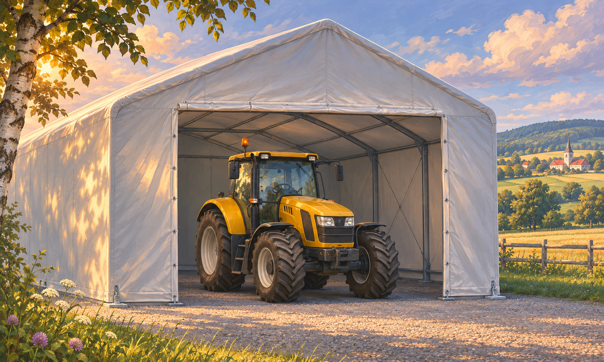
Vejde se můj traktor do plachtové haly? Jak změřit soupravu, vrata a místo u stěny
Článek na e-shopu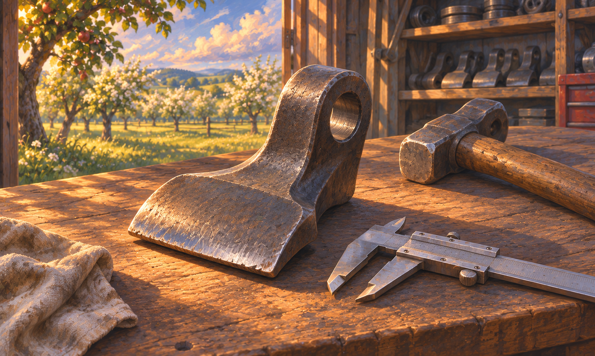
Jak poznat správné kladívko do mulčovače AGE nebo AGF
Článek na e-shopu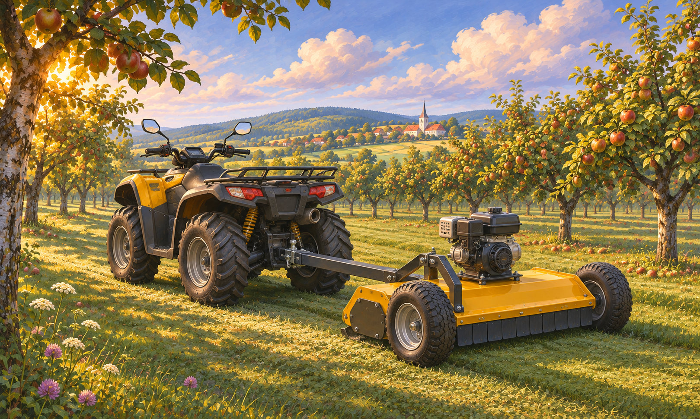
Mulčovač za čtyřkolku do sadu. Jak vybrat mezi ATV 120 a ATV 145 OT?
Článek na e-shopu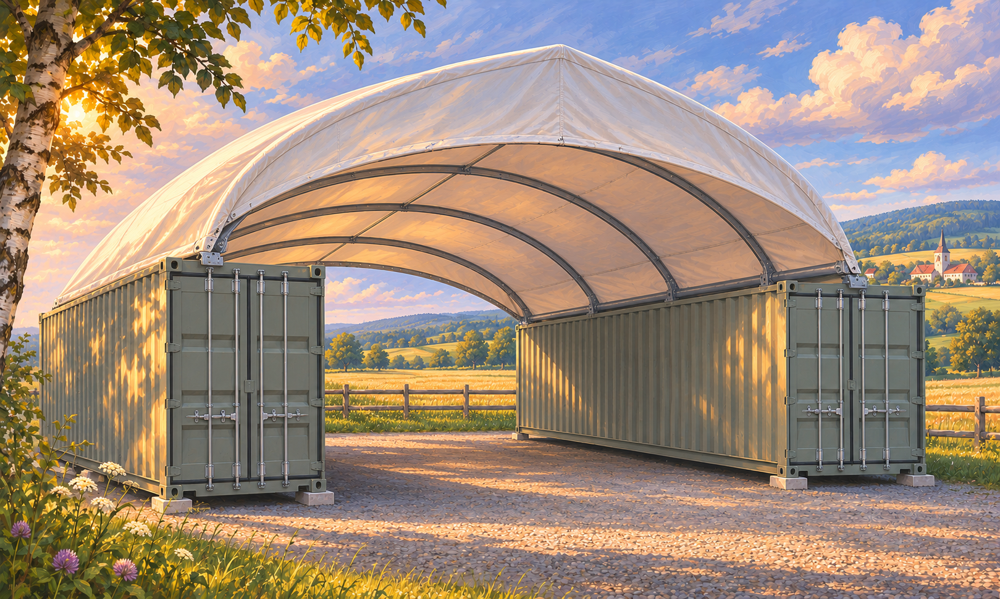
Zastřešení mezi dva lodní kontejnery. Co změřit před výběrem střechy a čela?
Článek na e-shopu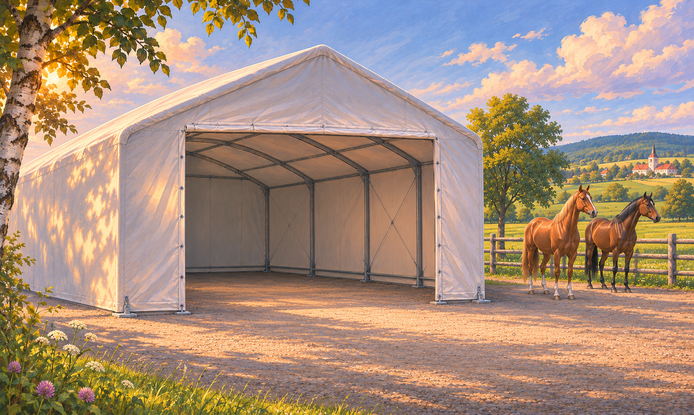
Přístřešek pro koně na pastvině. Jak naplánovat vchod, dovoz sena a čištění?
Článek na e-shopu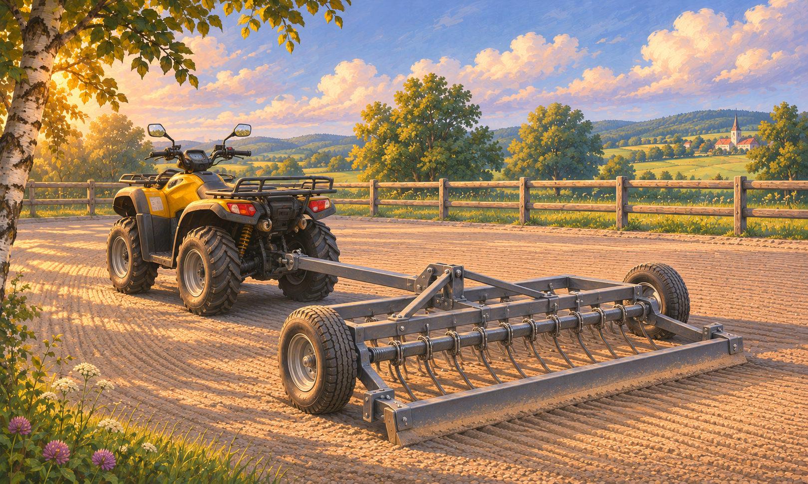
Planýrovač jízdárny za čtyřkolku, nebo za traktor? Srovnání HM 200, HM 200 ATV a HV 200
Článek na e-shopu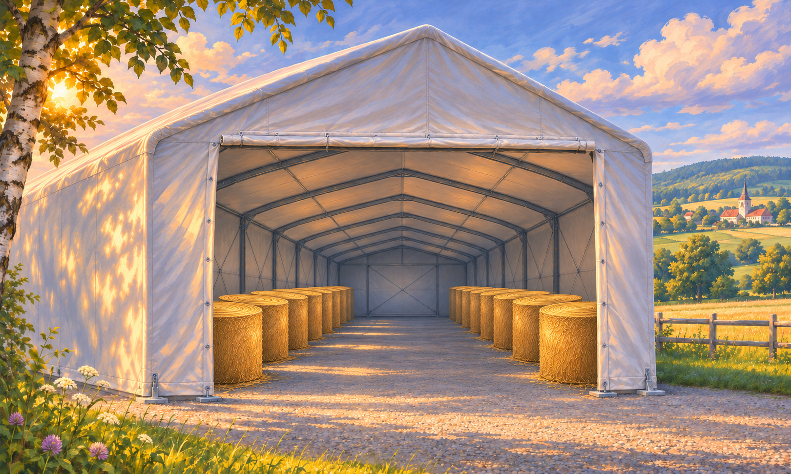
Kolik kulatých balíků se vejde do plachtové haly? Příklad s manipulační uličkou
Článek na e-shopu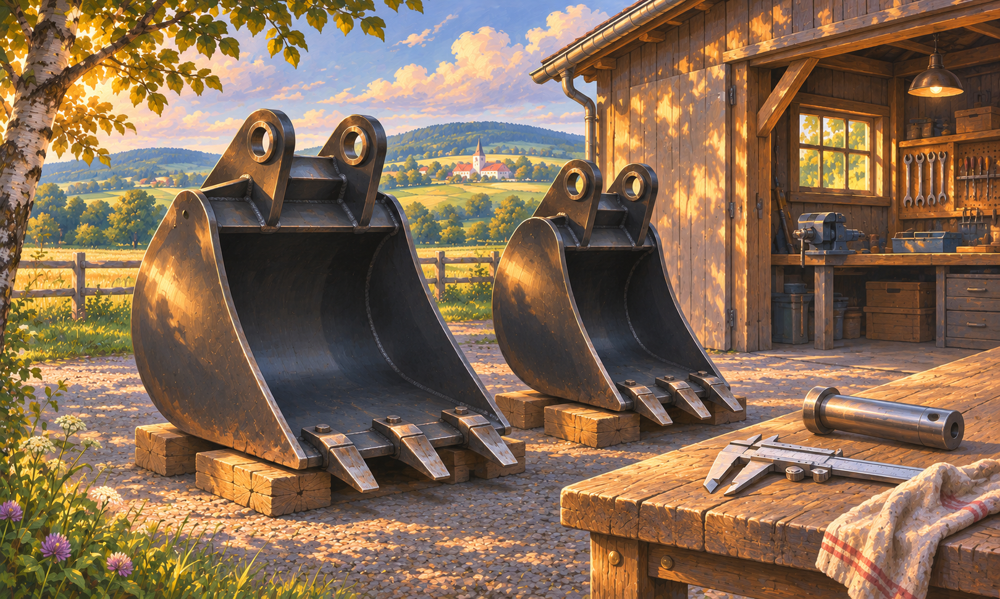
Lžíce na podkop BH nebo BH 5 R. Co ověřit před objednáním?
Článek na e-shopuProč v plachtové hale kape voda, i když neprší? Kondenzace a možnosti řešení
Článek na e-shopu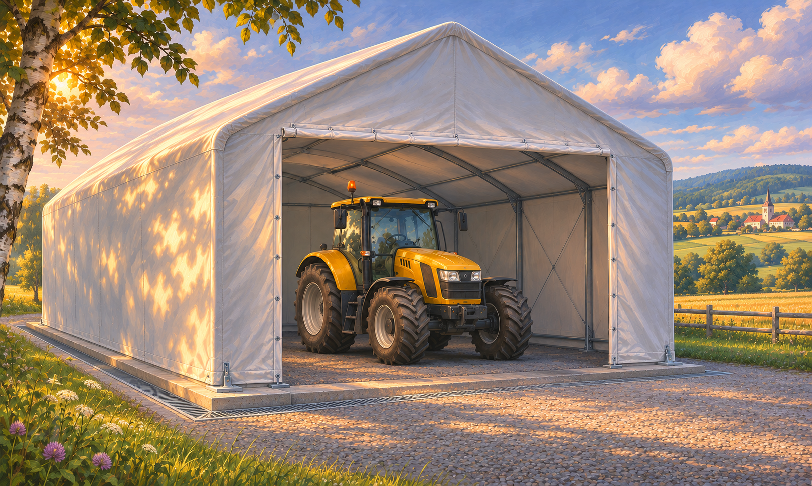
Co připravit pod plachtovou halu? Podklad, odvodnění a kotvení před objednávkou
Článek na e-shopuPlachtová garáž pro karavan: co ověřit kromě délky a výšky
Článek na e-shopu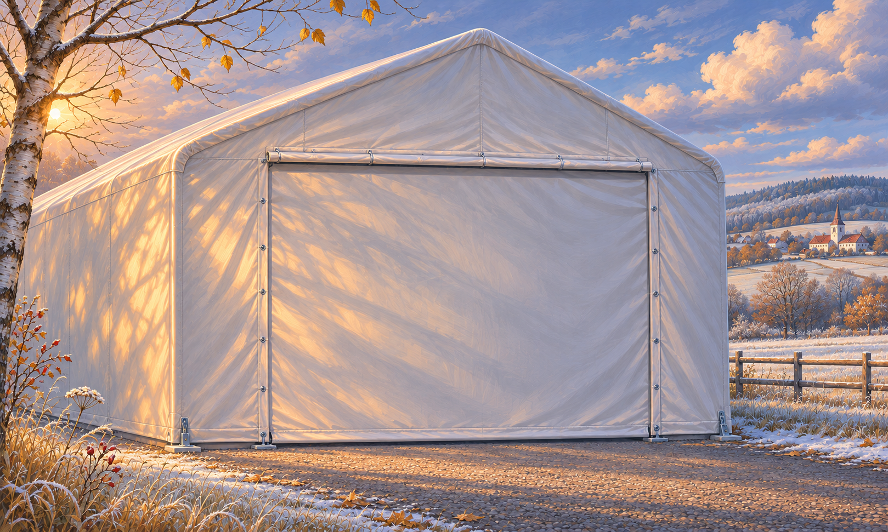
Plachtová hala před zimou: co zkontrolovat na plachtě, vratech a konstrukci
Článek na e-shopu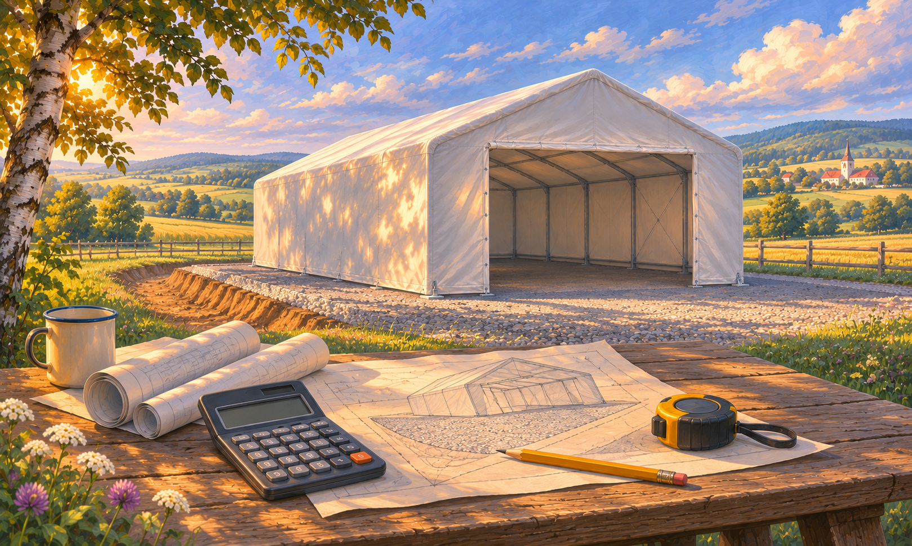
Kolik stojí plachtová hala celkem? Co připočítat k ceně konstrukce
Článek na e-shopu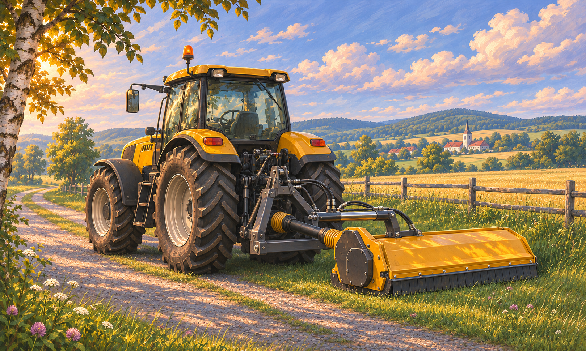
Příkopový mulčovač za traktor: stačí výkon, nebo rozhoduje i hmotnost a dosah?
Článek na e-shopu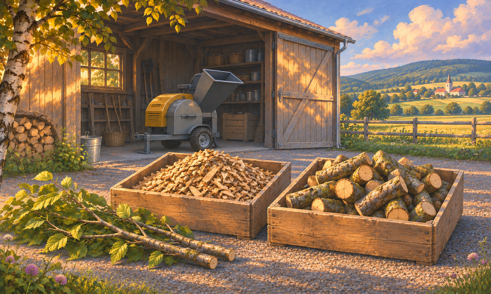
Štěpkovač, nebo špalíkovač? Vyberte podle toho, co chcete z větví získat
Článek na e-shopu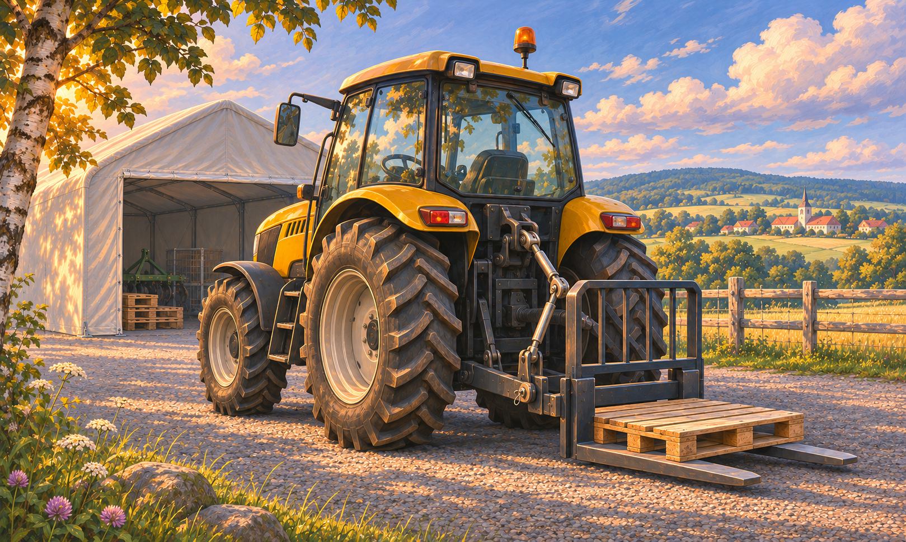
Paletizační vidle za traktor: jak vybrat nosnost, uchycení a délku vidlic
Článek na e-shopu